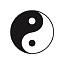
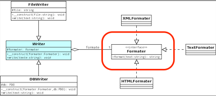
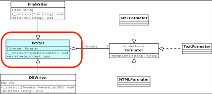
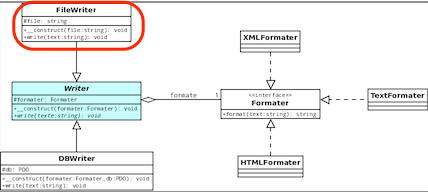
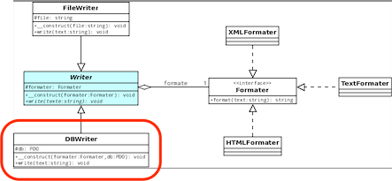
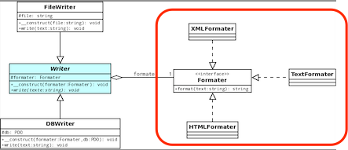

1. Introduction
Ce cours porte sur la Conception et Programmation Objet Avancée.
1.1. Concepts, bonnes pratiques et patrons
Vous avez appris (cf. M2103 et M2104) un certain nombre de concepts objets :
-
Abstraction
-
Encapsulation
-
Polymorphisme
-
Héritage
Vous avez/allez ensuite appris des bonnes pratiques :
-
Identifier les aspects qui varient et les séparer des aspects constants
-
Programmer une interface, non une implémentation
-
Préférer la composition à l’héritage
-
Les classes doivent être ouvertes à l’extension, mais fermées à la modification
-
Dépendez d’abstractions. Ne dépendez pas de classes concrètes (inversion des dépendances)
-
Ne parlez pas aux inconnus
L’étape suivante consiste à apprendre les bonnes solutions de conception, ce qu’on appelle les patrons de conception (ou design patterns en anglais).
1.2. Organisation
|
|
Rappel du rythme : 1 cours, 1 TD et 2 TPs par semaine. Pendant 8 semaines. |
-
La première semaine est consacré au principe des patrons de conception, en partant d’un exemple (cours en fin de semaine).
-
Les 5 ou 6 suivantes sont consacrées à l’étude de certains patrons classiques. Mise en pratique sur des exercices en TP.

Les TPs sont décalés d’une semaine (conception et étude d’un ou plusieurs patrons semaine
Net mise en oeuvre en TP semaineN+1). -
Les 2 ou 3 suivantes, les étudiants en mode projet pour faire du refactoring d’applications réelles (conception aidée en TD sur les modèles UML™, mise en oeuvre en TP).
Voici une proposition de déroulement des semaines :
- Semaine 1
-
SuperCanard, le grand classique, [Stratégie]
- Semaine 2
- Semaine 3
-
-
-
version intuitive (2 interfaces)
-
version Java (classe
Observable)
-
-
- Semaine 4
-
Patrons Fabrique, Proxy, Etat
- Semaine 5
-
L’exemple de Meyer : menus en objet
- Semaine 6
-
-
Patrons Décorateur, Façade, Visiteur
-
MVC avec l’exemple
JTablede Java -
Patrons Chaîne de responsabilité (juste en cours)
-
- Semaines 7 et 8
-
-
Quelques idées de projet final :
-
Refactorer un code généré par Umple.
-
Refactorer le code de MPA (mais pas le leur, celui d’un autre groupe)
-
-
1.3. Evaluation et notation
Comme prévu par le planning des contrôles, les étudiants auront :
-
une note de projet (TPs + projet final) ⇒ coef. 1
-
une note d’examen final (semaine 5) ⇒ coef. 2
2. Importance du typage
2.1. Différents types de typage
Le fait d’attribuer un type (une classe) à une variable (un objet) peut se faire de plusieurs façons :
-
statique
-
dynamique
-
duck typing
2.2. Typage statique
On parle de typage statique quand la majorité des vérifications de type sont effectuées au moment de la compilation.
int i = 0; // cette déclaration indique explicitement que
// la variable i est de type entier2.3. Typage dynamique
Le typage dynamique consiste à laisser l’ordinateur réaliser l’opération de typage à la volée, lors de l’exécution du code.
/**
* @author André Peninou
*/
public class Type {
void m() {
System.out.println ("Type");
}
}
public class SousType extends Type {
void m() {
System.out.println ("SousType");
}
void autreM(){
System.out.println ("Spécifique SousType");
}
}
...
Type a = new Type();
a.m(); // "Type"
a = new SousType();
a.m(); // "SousType"
// Statique : a est un Type (à la compil)
// Dynamique : a est un SousType au runtime.
// D'où :
a = new SousType();
a.autreM();
// NOK car type statique == A => autreM() n'existe pas à la compilation
...2.4. Duck typing
Style de typage dynamique où la sémantique d’un objet (c’est-à-dire son type) est déterminée par l’ensemble de ses méthodes et de ses attributs, et non par un type défini et nommé explicitement par le programmeur.
|
|
L’origine de cette expression est liée à cette citation :
— James Whitcomb Riley
|
def calcule(a, b, c)
return a*b+c
end
$a = calcule(6, 3, 2)
$b = calcule('6', 3, ', the number of the beast')
puts $a.to_s
puts $b.to_sCe qui donne :
20 666, the number of the beast
|
|
Pour aller plus loin : http://fr.wikipedia.org/wiki/Duck_typing |
3. Importance de la visibilité
Dès que l’on commence à avoir une application conséquente, l’organisation en package devient obligatoire. Revenons donc sur les questions de visibilité des propriétés et méthodes, qui seront importants dans la plupart des aspects de ce module.
Si un champ d’une classe A :
-
est private, il est accessible uniquement depuis sa propre classe ;
-
a la visibilité package (visibilité par défaut, pas de mot-clef), il est accessible de partout dans le paquetage de
Amais de nulle part ailleurs ; -
est protected, il est accessible de partout dans le paquetage de
Aet, siAest publique, grosso modo dans les classes héritant deAdans d’autres paquetages ; -
est public, il est accessible de partout dans le paquetage de
Aet, siAest publique, de partout ailleurs.
|
|
Ci-dessus, les niveaux de visibilité sont rangés par visibilité croissante. |
package UN;
public class A {
protected String attrprotected;
String attrfriend; // friend
}Si on définit une deuxième classe dans le même package :
package UN;
class B {
...
{
A a = new A ();
a.attrprotected// OK : même si bizarre
a.attrfriend // OK : visible package
}
}
package UN;
class C extends A {
...
{
this.attrprotected// OK : normal
this.attrfriend // OK : visible package
}
}package DEUX;
class B {
...
{
A a = new A ();
a.attrprotected// NON OK : normal
a.attrfriend // NON OK : normal, proche de "private"
}
}
class C extends A {
...
{
this.attrprotected// OK : normal car protected et héritage
this.attrfriend // NON OK : normal, proche de "private"
}
}À la question private ou protected ? Quel est le mieux pour les attributs ?
-
C’est une question de style de programmation !
-
Puristes (Meyer) ⇒
private -
Parfois utile : cf. Strategy, évite les getters/setters
|
|
Il n’y a pas de visibilité par défaut en UML™. |
4. Design patterns
4.1. Introduction : importance des patrons
Science is what we understand well enough to explain to a computer. Art is everything else we do.
4.2. Point sur le TD de la semaine passée
4.2.1. Principes de conception
|  |
Principe de conception
|
|
Principe de conception
|
|
Principe de conception
|
4.2.2. Premier patron
|
|
Design pattern : Stratégie (Strategy)
Stratégie définit une famille d’algorithmes, encapsule chacun d’eux et les rend interchangeables. Il permet à l’algorithme de varier indépendamment des clients qui l’utilisent. 
Figure 2. Modèle UML du patron Strategy
|
4.2.3. Premier exemple d’utilisation de patron
|
|
Pourquoi n’a-t’on pas utilisé Strategy pour afficher() ou nager()?
|
4.2.4. Autre exemple concret
|
|
Cet exemple est tiré de ce cours. |
Le problème
Vous avez une classe FileWriter qui a pour rôle d’écrire dans un fichier
ainsi qu’une classe DBWriter. Dans un premier temps, ces classes ne
contiennent qu’une méthode write() qui n’écrira que le texte passé
en paramètre.
Au fil du temps, vous vous rendez compte que c’est dommage qu’elles ne fassent que ça et vous aimeriez bien qu’elles puissent écrire en différents formats (HTML, XML, etc.) : les classes doivent donc formater puis écrire.
La solution
|  |
L’interface en
PHP (code source ici) |
|  |
La classe abstraite
Writer (code source ici) |
|  |
La classe
FileWriter (code source ici) |
|  |
La classe
DBWriter (code source ici) |
Enfin, nous avons nos trois formateurs.
L’un ne fait rien de particulier (TextFormater),
et les deux autres formatent le texte en deux langages
différents (HTMLFormater et XMLFormater).
|  |
La classe
TextFormater (code source ici)La classe
HTMLFormater (code source ici)La classe
XMLFormater (code source ici) |
4.2.5. D’autres exemples
-
La fonction standard
sort()de python>>> sorted("This is a test string from Andrew".split(), key=str.lower) ['a', 'Andrew', 'from', 'is', 'string', 'test', 'This'] -
Stratégie de cryptage en fonction de la taille d’un fichier
File file = getFile(); Cipher c = CipherFactory.getCipher( file.size() ); c.performAction(); // implementations: interface Cipher { public void performAction(); } class InMemoryCipherStrategy implements Cipher { public void performAction() { // load in byte[] .... } } class SwaptToDiskCipher implements Cipher { public void performAction() { // swapt partial results to file. } }
|
|
Plus de détails ici |
4.2.6. (non) Réutilisation
|
|
Les patrons ne sont pas réutilisables! |
Il faut implémeter la solution qu’il représente à chaque fois.
Exception : certains font l’objet d’une librairie.
Par exemple le patron Singleton existe dans la bibliothèque standard du langage en Ruby. C’est un mixin qu’il suffit d’inclure dans la classe qui doit être un singleton.
class Klass
include Singleton
# ...
end
a,b = Klass.instance, Klass.instance
a == b
# => true
Klass.new
# => NoMethodError - new is private ...4.2.7. Association ou composition
On trouve deux modèles UML™ :

Et donc deux implémentations :
public class Colvert extends Canard {
protected Colvert() {
this(new VolerAvecDesAiles(), new Cancan());
}
...
c1 = new Colvert();...
vol = new VolerAvecDesAiles();
cri = new Cancan();
c1 = new Colvert(vol,cri);
...4.3. Un peu d’histoire
- 1977
-
Alexander : patterns pour les architectures (les vraies)
- 1987
-
Beck et Cunningham : patterns pour des interfaces utilisateurs
- 1988
-
Meyer : livre sur l’orienté objet (langage Eiffel), devenu la bible pour beaucoup de programmeurs (cf. [Meyer88])
- 1990-1995
-
Gamma, Helm, Johnson et Vlissides : LE livre de référence (cf. [GoF]) NOTE: Les patterns de ce livre sont connus comme les Gof pour « Gang of Four ».
- 2003
-
Martin : principes SOLID (cf. [Martin03])
- 2004
-
Craig Larman décrit des modèles de conception : les Patterns GRASP (cf. [Larman05])
4.4. Exemples de bons principes
SOLID:
-
Single Responsibility Principle
-
Open-Closed Principle
-
Liskov Substitution Principle
-
Interface Segregation Principle
-
Dependency Inversion Principle

{kind=link}
4.4.2. Open-Closed Principle

Ouvert à l'extension mais fermé à la modification
|
|
Une fois écrite et testée, une classe ne devrait être modifiée que pour être corrigée! Toute modification devrait être possible par extension. |
4.4.3. Liskov Substitution Principle

Une classe doit pouvoir être remplacée par une instance d'un de ses sous-types, sans modifier la cohérence du programme
Un carré est un rectangle a deux côtés égaux.
|
|
Peut-on toujours substituer un Carré à la place d’un Rectangle ?
|
4.4.4. Interface Segregation Principle

Préférer plusieurs interfaces spécifiques pour chaque client plutôt qu'une seule interface générale
4.4.5. Dependency Inversion Principle

Il faut dépendre des abstractions, pas des implémentations
Ce principe indique :
-
Les modules de haut niveau (abstraits) ne doivent pas dépendre des modules de bas niveau. Les deux doivent dépendre d’abstractions.
-
Les abstractions ne doivent pas dépendre des détails d’implémentation. C’est l’inverse : les détails doivent dépendre des abstractions.
|
|
Ainsi ce principe va à l’encontre de l’intuition classique. |
4.4.6. SOLID et patrons
|
|
QUESTION
Lesquels des 5 principes SOLID s’appliquent bien à Strategy ? |
4.5. GRASP
The critical design tool for software development is a mind well educated in design principles. It is not the UML or any other technology.
2005
Il s’agit d’un ensemble de patrons, plutôt orientés conception (UML). Nous en aborderons certains au travers des exemples de ce module (cf. [Larman05]).
4.6. Les patrons : comment ça marche ?
4.6.1. Intérêt
-
Réponses éprouvées à des problèmes récurrents
-
Vocabulaire commun
T’as qu’à utiliser une factory!
4.6.2. Définifion
-
Nom
-
Problème
-
Solution
-
Conséquences
Exemple de Strategy :
- Nom
-
Strategy
- Problème
-
Situations où il est nécessaire de pouvoir définir dynamiquement les algorithmes utilisés.
- Solution
-
Définir une famille d’algorithmes, encapsuler chacun d’eux en tant qu’objet, et les rendre interchangeables.
- Conséquences
-
Ce patron laisse les algorithmes changer indépendamment des clients qui les emploient.
4.6.3. Patrons à aborder
-
Ceux déjà pratiqués
-
[Fabrique] (factory) (cf. parser sax)
-
Les "pressentis"
-
Itérateur
-
Composite
-
Etat
-
Proxy
-
Les nouveaux
-
Décorateur
-
Commande
-
Adaptateur
-
Façade
-
Patron de méthode
-
-
Les "avancés"
-
Chaînes de responsabilité
-
Visiteur
-
-
Ceux qu’on n’aura pas le temps d’aborder
-
Prototype
-
Mémento
-
Médiateur
-
Interprète
-
Poids-mouche
-
Monteur
-
Pont
-
-
Concepts avancés
-
Patrons de patrons (exemple du MVC)
-
Anti-patrons
-
Glossaire et définition
|
|
Ces définitions seront enrichies au fur et à mesure des patrons étudiés. |
Patrons de création

- Fabrique
-
Fabrique (simple) définit une interface pour la création d’un objet, mais en laissant à des sous-classes le choix des classes à instancier (voir aussi Fabrique abstraite).

- Fabrique abstraite
-
Fabrique (abstraite) fournit une interface pour la création de familles d’objets apparentés ou interdépendants, sans qu’il soit nécessaire de spécifier leurs classes concrètes (voir aussi Fabrique).
Patrons comportementaux
- Observateur (Observeruk)
-
Observateur définit une relation entre objets de type un-à-plusieurs, de façon que, lorsqu’un objet change d’état, tous ceux qui en dépendent en soient notifiés et soient mis à jour automatiquement.
- Stratégie (Strategyuk)
-
Stratégie définit une famille d’algorithmes, encapsule chacun d’eux et les rend interchangeables. Il permet à l’algorithme de varier indépendamment des clients qui l’utilisent.
Patrons structurels
- Adaptateur
-
TBD
- Composite
-
TBD
Références
-
[GoF] Design Patterns: Elements of reusable object oriented software. 1994.
-
[Cysboy] Apprenez à programmer en Java. Par
cysboy. Disponible ici (le 2014-11-22). -
GOPROD - De bonnes pratiques au service de la conception orientée objets. Disponible ici (le 2014-11-22).
-
[Larman05] Larman, Craig. Applying UML and Patterns – An Introduction to Object-Oriented Analysis and Design and Iterative Development (3rd ed.). Prentice Hall. 2005. ISBN 0-13-148906-2.
-
[Meyer88] Meyer, Bertrand. Object-Oriented Software Construction. Prentice Hall. 1988. ISBN 0-13-629049-3.
-
[Martin03] “Principles Of OOD”, Robert C. Martin (“Uncle BOB”), http://butunclebob.com (Last verified 2014-07-17). Note the reference to “the first five principles”, though the acronym is not used in this article. Dates back to at least 2003.
Conventions d’écriture
Diagrammes UML
Les diagrammes UML™ sont réalisés avec plantUML avec des conventions graphiques propres qui sont listées ci-dessous.
About…
Document réalisé par Jean-Michel Bruel via Asciidoctor (version 1.5.1) de 'Dan Allen', lui même basé sur AsciiDoc.
Pour l’instant ce document est libre d’utilisation et géré par la 'Licence Creative Commons'.
 licence Creative Commons Paternité - Partage à l'Identique 3.0 non transposé.
licence Creative Commons Paternité - Partage à l'Identique 3.0 non transposé.